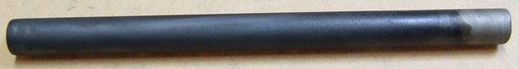
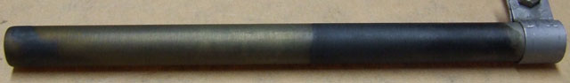

| Co3O4 Anodes |
Spinal Cobalt Oxide will form Chlorate and Perchlorate but has not been used commercially AFAIK.
Cobalt forms a number of Oxides,
CoO Cobaltous Oxide (Cobalt II)
Co2O3 Cobaltic Oxide (Cobalt I)
Co3O4 Cobalt Oxide. This may be described as CoO:Co2O3. It has a Spinal (external link) structure and is conductive. Magnetite also has a related structure. It is the Oxide we are interested in
for Anodes. This Oxide may also be described as CoO1.333
Note if using Ti substrate:
Titanium does not permit films to be prepared at higher temperatures that 500C because the interface
undergoes a sort of swelling and the over-layer becomes fragile and scales.
From J. Applied Electrochem 4 (1974) 57
The maximum baking temperature for Co Oxide coatings seems to be 375°C.
Cobalt Oxide anode made as per US 3399966 using Cobalt Sulphate. The Cobalt Oxide was deposited on Ti substrate and also Ti substrate with a
DTO coating. The anodes only lasted for some hours in a Perchlorate cell, longer in a Chlorate cell. This method of making Cobalt Oxide anodes was abandoned in favour of thermal methods.
An eight coat, 25% solution of Nitrate, Cobalt Oxide anode is shown below made by painting etched Ti with Cobalt Nitrate and baking. It was eroded away after 14 hours at initially 100mA/cm^2 and then 50mA/cm^2 in a Perchlorate cell (second picture). It appears that Cobalt Oxide anodes manufactured by thermal methods are not suitable for Perchlorate making.
Anodes and tests by Xenoid.


Co Oxide thermally prepared coatings are longer lasting in Chlorate cells. A 4 coat anode lasted approx. 8 days at 50mA per square cm. It is probably fair to assume that if this type of anode is used in a Chlorate cell with a low concentration of Chloride in it, it will not last long.
The Cobalt Oxide anode has been used for Chlorine production in the patents for over 500 days.
Various Cobalt Oxide spinels coated onto electrically-conductive substrates,
especially for use as Anodes in brine electrolysis, are known. Of particular relevancy
are U.S. Pat. Nos. 3,977,958; 4,061,549; and 4,142,005; all of which are incorporated
herein by reference.
Also of various degrees of relevancy are U.S. Pat. Nos. 4,073,873; 3,711,382;
3,711,397; 4,028,215; 4,040,939; 3,706,644; 3,528,857; 3,689,384; 3,773,555;
3,103,484; 3,775,284; 3,773,554; 3,632,498; and 3,663,280.
EXAMPLE II
A piece of ASTM Grade 1 titanium expanded mesh approximately 3".times.3".times.0.063"
(7.62.times.7.62.times.0.16 cm) was dipped in 1,1,1-trichloroethane, air dried, dipped
in HF-HNO<3 etching solution approximately 30 seconds, rinsed with deionized water,
and air dried. The mesh was blasted with Al2 O3 grit to a uniform rough surface
and blown clean with air. An interface coating precursor solution was prepared as
follows: 1.30 g of InCl34H2 O and 0.009 g SbCl3 were dissolved in 3.2 g concentrated
reagent
HCl and 20.5 g technical isopropyl alcohol. An active spinel coating precursor, Solution (C), was prepared by mixing
appropriate quantities of Co(NO3)2.6H2 O, Zn(NO3)2.6H2
O, aqueous ZrO(NO3)2
solution, and deionized H2 O to give a mole ratio of 10 Co:5 Zn:1 Zr.
The specimen was brushed with the interface solution, baked in a 400.degree. C. convection oven for about
ten minutes, removed, and cooled in air about ten minutes. The specimen was then given twelve coats of spinel.
Each coat was applied by brushing with spinel coating precursor, baking at 400.degree. C. ten minutes, removed
from the oven, and cooling in air about ten minutes. After the twelfth spinel coat had been baked the anode was
given a final bake at 375.degree. C. for about one hour.
The anode was placed in a diaphragm chlorine cell as described above and operated for over 1.5 years. The cell
was shut down from time-to-time for measurement of the anode potential in the laboratory cell, also described
above. The potential of the anode at 0.5 ampere per square inch (6.45 cm2) apparent current density and
70.degree. C., measured versus saturated calomel at 30.degree. C., was 1082 mv prior to start-up, 1104 mv after
0.15 yr. operation, and 1093 mv after 1.5 yr. operation. It thus demonstrated stable operation in long-term
service as a chlorine anode.
Snip from US H000544
The patent is worth reading in full
The general procedure for making the cobalt oxide anode used in the comparative experiment above is as follows.
Cylindrical titanium rods, approximately 1" long.times.1/4 diameter (2.54.times.0.64 cm) are dipped in
1,1,1-trichloroethane, air dried, rinsed in deionized H2 O, placed in 1:1 HCl solution for 15 minutes,
rinsed in deionized H2 O, and air dried. An interface coating precursor solution is prepared as
follows:
2.96 g
of In(NO3)3 is dissolved in 6.10 g 70% reagent HNO3 and 50.0 g technical isopropyl
alcohol;
A cobalt
spinel coating precursor is prepared by mixing appropriate quantities of Co(NO3)2.6H2 O,
Zn(NO3)2.6H2 O, aqueous ZrO(NO3)2 solution, and deionized H2
O to give a mole ratio
of 10 Co:5Zn:1Zr.
Then, the rods are dipped in the interface solution, baked in a 375.degree. C. convection oven for
about ten minutes, removed, and cooled in air about ten minutes.
The rods are then given six coats of cobalt spinel.
Each coat is applied by dipping in spinel coating precursor, baking at 375.degree. C. ten minutes, removing from the
oven, and cooling in air about ten minutes. After the sixth spinel coat has been applied the rods are given a final
bake at 375.degree. C. for about one hour.
HIT THE BACK BUTTON ON YOUR BROWSER